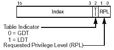
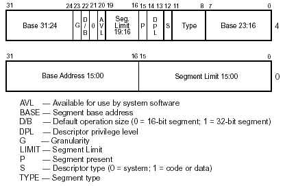

Computer Science Department |
 |
 |
 |
 |
 |
x86 Segmentation for the 15-410 Student
Executive Summary
Intel intended x86 programmers to think of every memory item as being contained in a segment, a logically-contiguous, bounds-checked, typed memory region. So the processor thinks of instruction addresses being in a code segment, stack addresses as being in a stack segment, and data addresses as being in one of four data segments. This thinking pervades the hardware, so before you can disable it you must understand it to some extent.
Summary for Managers
When the processor fetches an instruction, it asks for an address of the form CS:EIP. So if %EIP is 0x100, this indicates the 256'th byte of the CS segment.
In order to figure out what that means, the processor looks at the 16-bit segment selector which was placed in the %CS register by the operating system. Segment selectors contain three pieces of information: a segment number, a table selector flag, and a request privilege level.

The segment number indexes a segment descriptor table which is much like the interrupt descriptor table. There are two tables of segment descriptors, the global descriptor table and the local descriptor table. The table indexed by the segment number depends on the table selector flag. Finally, the request privilege level (RPL) has different meanings depending on which segment register the selector is in. In this case (the %CS register), the RPL sets the privilege level of the processor.Each segment descriptor defines a region of virtual memory by specifying a base address and a size. In addition, there are various flag bits and a privilege level. The 0x100 is compared to the segment size (it must be smaller or else the address is outside the CS segment!) and then added to the base address to form a "linear" virtual address, which could be something like 0xCAFE0100 if the segment base were 0xCAFE0000.

This linear virtual address is then fed into the page-directory/page-table system based on the active page directory, determined by the value placed in the %CR3 register by the operating system. That is, the top 10 bits are used to look up a page table in the page directory, and the next 10 bits are used to look up a page table entry inside the page table.
Stack addresses work the same way as code addresses but are defined to use addresses inside the SS segment (that is, the segment specified by the selector stored in the SS register). Data reads and writes are defined to use the DS segment by default but can use the ES, FS, or GS segments instead.
What this means to you
In these projects, we will be using segmentation as little as possible. Often segmentation is used to increase protection and robustness. In order to simplify the kernel however we will not be using segmentation to achieve these goals. Unfortunately we must still use segmentation in some limited degree to satisfy the x86 architecture's requirements. This document summarizes segmentation as far as the x86 is concerned. Note that you do NOT have to understand how to modify things like the global descriptor table. You simply need to understand what segment selectors need to be in what segment registers when (and what a segment register and selector is).
How we abuse segmentation
All segments we define will have base 0x00000000 and 0xFFFFFFFF. To see why this makes sense, recall that we want a totally flat address space, and that the processor uses the base and limit as follows:
- check offset < limit (so we set limit == infinity)
- add base to offset (so we set base to 0)
The net result is that the processor mindlessly verifies that our offset (say, a value of %EIP) is less than infinity, and then adds zero to it. This is an expensive no-op, but, hey, we have more transistors than we know what to do with, right? So, naively, one 0x00000000-base, 0xFFFFFFFF-limit segment descriptor, pointed to by one segment selector, placed in %CS, %SS, %DS, %ES, %FS, and %GS, should suffice, right?
We need two segments, one for code and one for data
It turns out that while the segment descriptor TYPE field allows us to specify a wide variety of segment permissions, there is no bit pattern which grants both EXEC and READ/WRITE permissions. Thus we need one READ,EXEC segment for code and one READ,WRITE segment for data and stack. So we will need two segment descriptors and two segment selectors, one for %CS and one for %SS, %DS, %ES, %FS, and %GS.We need four segments, two at PL0 and two at PL3
At any given time, the CPU is executing at one of four privilege levels. The privilege levels are organized something like this (this diagram is taken right out of intel-sys.pdf, chapter 4, section 5):
In these projects (as is the case with many operating systems), only privilege levels 0 and 3 will be used. Privilege level 0 (PL0) corresponds to kernel mode, while privilege level 3 (PL3) corresponds to user mode. The privilege level of the currently executing process is stored in the bottom two bits (the RPL) of the segment selectors in the %CS and %SS registers (this implies that those two bit fields must be the same). In a data segment selector, the RPL has a different function. When performing privilege level checks to see if a particular segment is accessible as a data segment, the processor must decide what the current privilege level is, and if that level is privileged enough to access the data segment. If the RPL of a data segment selector is less privileged than the current privilege level, the processor uses that less priviliged level in determining if the data segment is accessible.
Protecting the Kernel
We would naturally like to protect the kernel from being tampered with by meddling user processes. We could use segmentation to do this, but because we are trying to avoid segmentation, we will use the paging mechanism. Each page table entry has a bit for user/supervisor. This bit controls whether the page is accessible from user mode (PL3). Note that there is also a similar bit in the page directory entry. These two bits combine to specify the overall access characteristics of the page.
So, in order to use paging to protect the kernel area, that means that our user processes will have to execute in user mode (PL3). This might be obvious to some, but it is important to conciously realize the reasons why we do not just run all the code, kernel and user, in kernel mode (PL0) or run all the code in user mode (PL3). In order to have all memory accesses checked by the hardware automatically, we need to make use of the privilege level mechanism (and either segmentation or paging - in our case, paging).
So now, we've established that we have to have two separate privilege levels in the system. The kernel will run at privilege level 0, and the user processes will run at privilege level 3.
Four descriptors and four selectors
In summary, our interaction with segmentation will be defining four very-similar segment descriptors (same base, same limit; type PL values and 2 TYPE values). At any time every segment register should contain one of these four segment selectors.
| Segment name | Features | Segment table index | Selector value |
|---|---|---|---|
| Kernel code | PL0, READ, EXEC | SEGSEL_KERNEL_CS_IDX | SEGSEL_KERNEL_CS |
| Kernel data | PL0, READ, WRITE | SEGSEL_KERNEL_DS_IDX | SEGSEL_KERNEL_DS |
| User code | PL3, READ, EXEC | SEGSEL_USER_CS_IDX | SEGSEL_USER_CS |
| User data | PL3, READ, WRITE | SEGSEL_USER_DS_IDX | SEGSEL_USER_DS |
Putting the pieces together
When kernel_main() begins, segment descriptors for
all four segments have been entered into the Global Descriptor Table
for you. Your job will be to make sure the appropriate selectors
make it into the right segment registers at the right times.
The code and stack segment registers are changed automatically when you take an interrupt or exception. This happens because when you set up your interrupt and exception handlers in the IDT, you specified that they were DPL 0. This means the handlers need to be executed at privilege level zero. You also specified that the code segment was SEGSEL_KERNEL_CS. The stack switches automatically to a value defined in the hardware task OSKit has set up (this is similar to the value set by the set_esp0 function). However, the hardware does not automatically change the various data segment registers. You should determine which ones you will need while in the kernel, save their user-mode values somewhere, and install the correct values for the kernel. While the kernel can use PL3 (user level) data segments since they are less privileged, your kernel should not rely on the data segment registers being properly set at an exception or interrupt (the user process may have clobbered the data segment registers).
To switch into user mode (PL3), you will set up an iret block that contains, among other things, a stack segment selector and a code segment selector. Before you iret to user mode the first time during process bootstrap, remember you need to install segment selectors into the data segment registers as well. You can use the same segment selector that you put into the stack segment register, SEGSEL_USER_DS. Finally, you need to remember to save and restore those data segment registers along with the rest of the process' context on a context switch. Once you have bootstrapped a new process, its code and stack segment selectors will be saved automatically by the interrupt mechanism (look at the iret block, the CS and SS values are saved in there). However the data segment registers are not saved. These could be changed while you are in kernel mode to point to segments requiring PL0 to access. If you resumed executing a user process with that, the first time it attempted a memory access it would receive a general protection fault. So, make sure to save and restore those data segment registers.
[Last modified Monday September 08, 2008]